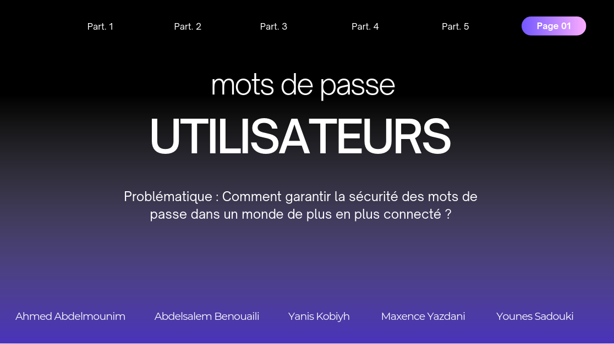
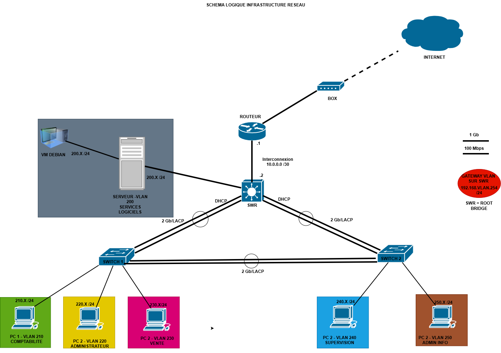
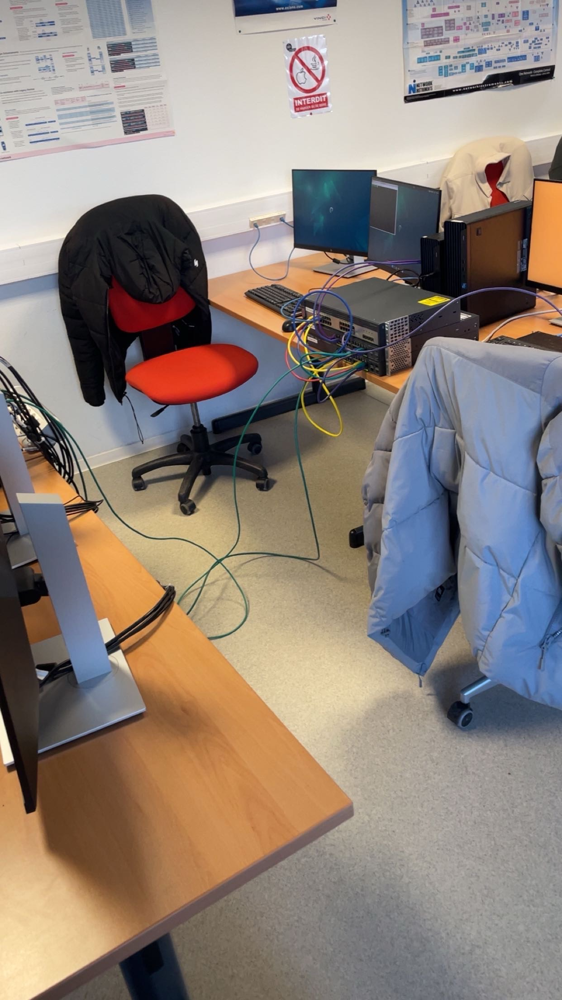
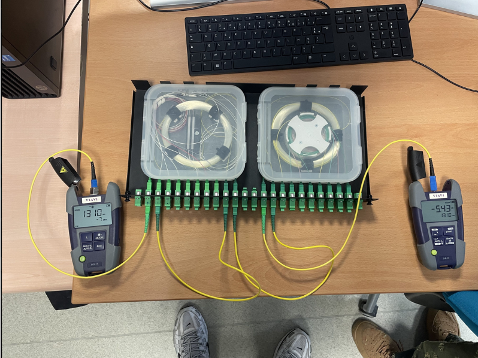
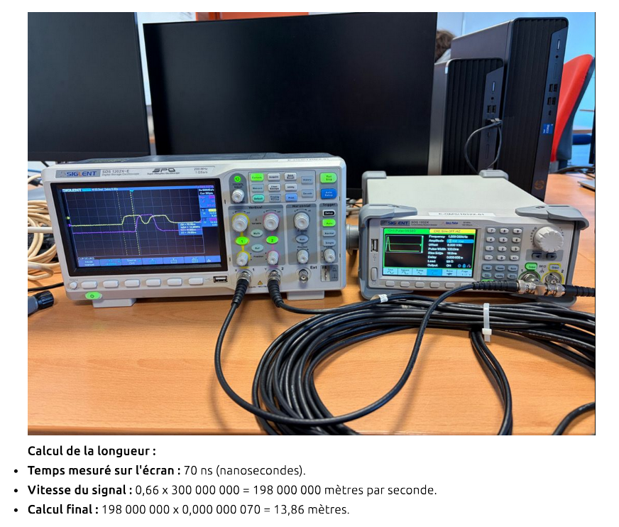
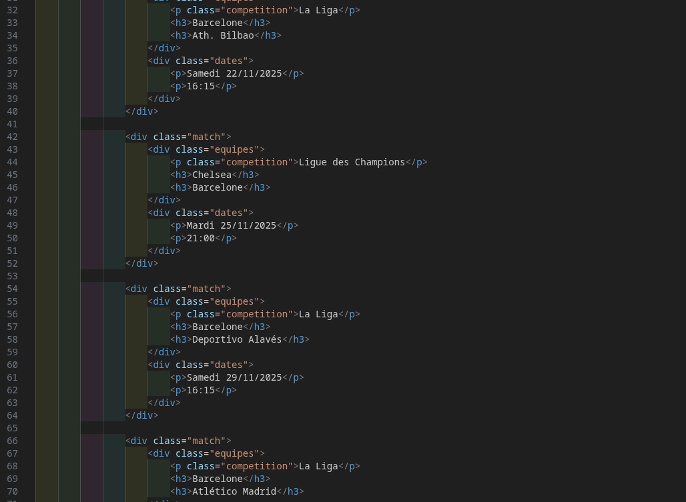
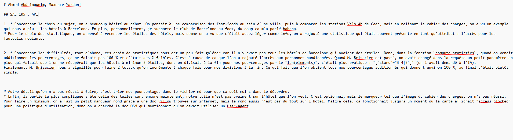

Je m'appelle Abdelmounim Ahmed, j'ai 19 ans. Bienvenue sur mon portfolio. Ce site retrace mon évolution, mes projets (SAÉ) et mes apprentissages réalisés lors de cette première année.
Étudiant en BUT R&T (1A)
IUT Grand Ouest Normandie, Ifs
J'ai 19 ans et j'étudie actuellement en BUT Réseaux et Télécommunications. J'ai choisi cette filière car le fonctionnement des infrastructures réseaux et la manière dont les données circulent m'intéressent beaucoup. Cette première année a été l'occasion d'acquérir de bonnes bases pratiques via les Situations d'Apprentissage et d'Évaluation (SAÉ).
Ce qui me plaît dans ce domaine, c'est la logique et la rigueur que ça demande. À côté de ça, j'ai aussi une expérience professionnelle dans la vente. Cela m'a appris à écouter, à être responsable et à m'adapter facilement aux gens et aux imprévus, des qualités utiles pour travailler en équipe sur des projets techniques.
Après mon BUT, mon objectif est d'intégrer une école d'ingénieurs spécialisée dans les réseaux ou les télécoms. J'aimerais vraiment mettre en pratique ce que j'apprends à l'IUT sur le terrain. Mon but est de développer de solides compétences techniques pour pouvoir, à terme, gérer de vrais projets d'infrastructures.
Voici un aperçu de mes projets pratiques de première année. Vous pouvez cliquer sur "Voir la page dédiée" pour comprendre ce que j'ai fait, ce que j'ai appris et les compétences que j'ai pu valider.
Hygiène Info & Cyber
Mieux comprendre les risques informatiques via le MOOC de l'ANSSI, et tester des failles (mots de passe, force brute) lors de travaux pratiques.
S'initier aux réseaux
Création d'un réseau local complet pour l'entreprise fictive Fibre&Company : configuration de routeurs, VLANs et installation d'un serveur sous Proxmox.
Dispositifs de transmission
Manipulations en TP pour comprendre comment se transmet un signal physique, que ce soit sur un câble en cuivre ou via une fibre optique.
Se présenter sur Internet
Création d'un site web complet en HTML et CSS sur le thème du FC Barcelone, en respectant les normes d'accessibilité W3C et WCAG.
Traitement des données
Utilisation du langage Python pour extraire des données géographiques d'Internet (API OpenStreetMap) et les mettre en forme de façon lisible.
L'objectif de cette SAÉ était de prendre conscience des risques liés à la sécurité informatique. J'ai suivi les modules du MOOC de l'ANSSI pour apprendre les bonnes pratiques. Ensuite, en groupe, nous avons travaillé sur un cas pratique pour voir concrètement comment des attaques peuvent arriver, et nous avons présenté nos recherches à l'oral.
Comprendre l'architecture des systèmes numériques et les principes de communication
Maîtriser les systèmes d'exploitation afin d'interagir avec eux (Kali Linux, CLI)
Identifier les dysfonctionnements et failles de sécurité du réseau local
Maîtriser les lois fondamentales de l'électricité afin d'intervenir sur les équipements de réseaux et télécommunications
Mon groupe a travaillé sur le lot mots de passe utilisateurs. Voici mes actions précises :
Page de garde de notre présentation orale :

Les difficultés : S'organiser en groupe au départ n'était pas évident. On a dû répartir les tâches correctement pour que chacun ait une contribution réelle et un temps de parole équitable à l'oral.
Ce que j'aurais fait autrement : J'aurais mieux documenté les captures d'écran des outils pendant les manipulations pour avoir des preuves plus concrètes dans la présentation.
Ce que j'en tire : Cette SAÉ m'a vraiment fait prendre conscience de la vulnérabilité des systèmes face à des attaques simples. Manipuler Hydra et CUPP m'a montré concrètement pourquoi les politiques de mots de passe strictes existent. Je sais maintenant utiliser un environnement Kali Linux en ligne de commande, ce qui m'a aussi servi pour la SAÉ 1.02 (Debian, SSH).
Dans cette SAÉ, on nous a placés dans la peau de techniciens réseaux recrutés par une entreprise fictive, Fibre&Company, spécialisée dans le déploiement de la fibre optique. L'entreprise avait un réseau vieillissant, sans aucune segmentation, et devait doubler ses effectifs. Notre mission : concevoir et déployer un prototype d'infrastructure réseau complète, en partant de zéro, avant une éventuelle mise en production.
Le projet couvrait trois grandes parties : la configuration réseau (VLANs, routage, agrégation de liens, STP), les services Linux sur une VM Debian déployée via Proxmox, et la sécurité des équipements. La SAÉ s'est conclue par un examen individuel Cisco NetAcad "Introduction aux réseaux" et un TP noté de 30 minutes sur table.
Comprendre l'architecture des systèmes numériques
Configurer les fonctions de base du réseau local
Maîtriser les systèmes d'exploitation (Linux Debian CLI)
Identifier les dysfonctionnements du réseau local
Installer un poste client et expliquer la procédure de mise en place
Le projet s'est organisé autour de trois axes principaux sur lesquels j'ai contribué activement :
curl et lynx.Schéma logique de l'infrastructure réseau que nous avons déployée :

Schéma logique — Infrastructure complète avec VLANs, routeur, SWR root bridge et VM Debian.
Photo de notre maquette réelle en salle de TP :

Maquette physique — Câblage des switchs Cisco et du routeur en salle 3250.
En parallèle du projet groupe, j'ai passé l'examen Cisco NetAcad "Introduction aux réseaux" qui couvre les modèles OSI/DoD, l'adressage IPv4, les protocoles de transport et les bases de la sécurité. Ça m'a permis de consolider et de formaliser tout ce qu'on avait mis en pratique sur la maquette — des fois tu fais les choses sans vraiment avoir les mots pour les expliquer, l'examen t'oblige à structurer ta pensée. Un TP noté de 30 minutes en individuel est venu compléter l'évaluation, sur des manipulations directes en ligne de commande.
Les difficultés : Le plus dur n'était pas technique. Sur un réseau à plusieurs mains, dès que quelqu'un modifie un paramètre sans prévenir les autres, tout peut tomber. On a eu quelques moments de panique où on ne comprenait plus pourquoi le ping ne passait plus, et il s'avérait que c'était une config changée en silence sur un autre switch.
Comment on a géré : On s'est imposé une règle simple — tout changement annoncé avant d'être fait, et noté dans un doc partagé. Ça a vraiment changé l'ambiance de travail.
Ce que j'aurais fait autrement : Je me serais davantage impliqué dans la partie Proxmox dès le début plutôt que de me concentrer uniquement sur le réseau. La partie virtualisation était moins familière pour moi et j'ai dû monter en compétence rapidement en fin de projet.
Ce que j'en tire : Cette SAÉ m'a prouvé que je suis capable de configurer une infrastructure réseau réelle de bout en bout. Je sais maintenant ce que c'est de travailler sur du vrai matériel Cisco, pas juste un simulateur. Et surtout j'ai compris que dans un projet technique, la communication dans l'équipe est aussi critique que la technique elle-même — c'est quelque chose que je vais garder en tête pour tous mes projets futurs.
L'objectif de cette SAÉ était de caractériser deux supports de transmission fondamentaux : la fibre optique et le câble coaxial en cuivre. Il s'agissait d'effectuer des mesures en laboratoire, de comprendre le comportement des signaux et de vérifier la qualité des liaisons par le calcul et l'expérimentation.
Mesurer et analyser les signaux (oscilloscope, photomètre)
Déployer des supports de transmission (fibre optique, câble coaxial)
Communiquer avec un tiers, s'adapter à son discours et à sa langue — rédaction des comptes-rendus de manipulation

Trace 1 : Détail du schéma de la liaison et des mesures d'atténuation sur la fibre optique.

Trace 2 : Capture de l'oscilloscope avec le GBF montrant le signal électrique (résultat du calcul : 13,86m).
Les difficultés : Notre groupe n'a eu que 30 minutes d'explications sur la fibre au lieu des 2 heures prévues. Il a fallu comprendre rapidement comment calibrer le photomètre (faire le zéro avec les cordons de référence) sans quoi toutes les mesures auraient été faussées.
Ce que j'aurais fait autrement : Prévoir plus de temps sur la partie cuivre pour tester plusieurs longueurs de câble et consolider la compréhension de la méthode DTF, pas seulement valider une mesure.
Ce que j'en tire : J'ai dû chercher par moi-même comment fonctionnait la calibration du photomètre, et ça a fini par payer. J'ai appris à manipuler un oscilloscope et un photomètre, à appliquer une formule physique sur des données réelles, et surtout à ne pas paniquer quand les conditions de TP ne sont pas idéales.
C'était un projet individuel : concevoir et développer un site web multipage en HTML/CSS sur un thème libre. Le cahier des charges était précis — minimum 3 pages, charte graphique cohérente, responsive design, animations CSS, validation W3C sans erreur et conformité WCAG 2.0 AA pour l'accessibilité. Le code devait être versionné sur GitHub avec des commits explicites, et le site hébergé via GitHub Pages.
J'ai choisi de faire mon site sur le FC Barcelone — l'effectif 2025, le calendrier des matchs et l'histoire du club. Un sujet que je connaissais bien, ce qui m'a permis de me concentrer sur le technique plutôt que de chercher du contenu.
Utiliser un système informatique et ses outils
Connaître l'architecture et les normes d'un site Web
index.html, calendrier.html, apropos.html) avec les balises header, main, section, aside, footer.grid-template-columns: 1fr 1fr) pour aligner les matchs du calendrier.alt sur toutes les images, ratio de contraste couleur suffisant, navigation au clavier fonctionnelle.Deux extraits du code source pour illustrer la technique :
HTML — Structure du calendrier des matchs

Extrait du README.md — Documentation du projet
# Site Web - FC Barcelona
Réalisé dans le cadre de la SAE 14.
Objectif : site web complet et responsive.
## Accès au site
Hébergé via GitHub Pages.
https://ahmed2720.github.io/sae/
## Pages
1. Accueil (index.html)
Effectif 2025, Lamine Yamal,
palmarès + animation loader CSS.
2. Calendrier (calendrier.html)
Matchs en CSS Grid, classement
La Liga, forme de l'équipe.
3. À Propos (apropos.html)
Contexte du projet.
## Technologies
- HTML5 sémantique
- CSS3 : Flexbox, Grid, Media Queries
- Animations CSS (loader + survols)
## Qualité
- Validation W3C : 0 erreur
- Conformité WCAG 2.0 AA
Les difficultés : La validation W3C et WCAG 2.0 AA a été la partie la plus chronophage. Le moindre attribut alt manquant ou un contraste de couleur insuffisant faisait tomber le test. J'ai dû retravailler plusieurs fois ma palette de couleurs pour que le ratio de contraste soit suffisant.
Ce que j'aurais fait autrement : Tester la validation W3C au fur et à mesure plutôt qu'à la fin. Corriger 30 erreurs d'un coup c'est vraiment plus long que de les corriger une par une au fil du développement.
Ce que j'en tire : Cette SAÉ m'a appris à respecter un cahier des charges strict avec des critères de qualité mesurables. Coder un site qui "marche" c'est une chose, coder un site qui passe les normes d'accessibilité c'en est une autre. C'est quelque chose que je réutiliserai — dans ce portfolio par exemple, j'ai gardé ces réflexes en tête.
C'était le premier vrai projet de programmation de l'année, réalisé en binôme avec Maxence Yazdani. Le but : exploiter les API d'OpenStreetMap en Python pour récupérer des données géographiques, calculer des statistiques dessus, et produire des fiches de résultats aux formats Markdown et HTML. Le projet était en grande autonomie — pas de TP guidé, juste un cahier des charges et de la débrouille.
Le projet se divisait en deux sous-parties : fiche_osm (générer automatiquement une fiche sur un point d'intérêt OSM à partir de son identifiant) et infos_locales (récupérer tous les objets d'un certain type sur une zone et calculer des statistiques). Pour notre sujet, on a choisi les hôtels de Barcelone — le choix était libre, et le Barça aidant, la décision s'est vite imposée.
Utiliser un système informatique et ses outils
Lire, exécuter, modifier et corriger un programme
Traiter des données hétérogènes (JSON, API REST)
get_node(id) : requête GET sur l'API REST OSM (api/0.6/node/{id}.json), récupération de la réponse JSON et renvoi du dictionnaire de données.node_to_md() : écriture d'un fichier Markdown structuré (titre, lien OSM, liste des attributs) à partir du dictionnaire, puis conversion en HTML via la librairie markdown.generate_map(lat, lon) : calcul des coordonnées de tuile avec la formule deg2num (doc wiki OSM), téléchargement de la tuile PNG via l'API de tuiles avec User-Agent, dessin d'un marqueur rond rouge au centre avec Pillow.python3 osm.py génère les fichiers md et HTML pour un nœud de test (id 192067263).get_dataset2(requete) : envoi d'une requête Overpass QL à l'API Overpass pour récupérer tous les hôtels de la zone Barcelone (filtre wikipedia=ca:Barcelona), avec gestion du timeout (90s) et du code de retour HTTP.compute_statistics2(donnees) : parcours de chaque hôtel, comptage des valeurs des attributs stars et wheelchair dans des dictionnaires, puis calcul des pourcentages en divisant par deux totaux séparés (correction guidée par M. Brisacier).dataset_to_md() : génération d'un fichier Markdown complet avec les statistiques en tête (étoiles, accessibilité PMR) puis la liste exhaustive des hôtels avec leurs attributs et un lien OSM pour chacun.convert() pour transformer le Markdown en HTML via la librairie markdown, et fonction principale info_locales() qui orchestre tout le pipeline.Les deux scripts principaux du projet :
osm.py — Fiche d'un nœud OSM + carte Pillow
def get_node(id:int) -> dict:
url = f"https://api.openstreetmap.org
/api/0.6/node/{id}.json"
reponse = requests.get(url)
donnes = reponse.json()
return donnes['elements'][0]
def generate_map(lat, lon):
zoom = 16
x, y = deg2num(lat, lon, zoom)
url = f"https://tile.openstreetmap
.org/{zoom}/{x}/{y}.png"
reponse = requests.get(url,
headers={"User-Agent":"sae"})
# dessine un rond rouge au centre
draw.ellipse([123,123,133,133],
fill='red')
img.save("carte_marqueur.png")Rapport de projet rendu (extrait)

Les difficultés : Le plus délicat a été la partie statistiques. Au départ, les pourcentages ne s'additionnaient pas à 100% parce que beaucoup d'hôtels n'ont pas d'étoiles renseignées dans OSM — on divisait par le nombre total d'éléments alors qu'on aurait dû diviser uniquement par ceux qui ont l'attribut. On a aussi eu un moment où l'API de tuiles renvoyait "access blocked" — en cherchant dans la doc, on a trouvé qu'il fallait ajouter un User-Agent dans la requête.
Ce qui n'a pas fonctionné : Le marqueur sur la carte n'est pas précisément positionné sur l'hôtel — on a réussi à télécharger la bonne tuile et à dessiner un point rouge, mais le calcul exact de la position en pixels sur l'image reste approximatif. On ne l'a pas résolu, mais on comprend pourquoi ça ne marche pas.
Ce que j'en tire : C'est la première fois que j'écrivais un programme qui fait quelque chose de concret — il va chercher des vraies données sur internet et produit un vrai document lisible. Le fait de travailler en autonomie complète sur un projet ouvert, c'est assez différent d'un TP guidé. On a dû lire des docs, tester, se tromper, et recommencer. C'est clairement ce type de projet qui apprend le plus.
Synthèse de mes apprentissages et validation des compétences du Semestre 1.
Ce premier semestre en BUT R&T m'a permis d'acquérir les bases techniques de mon futur métier. À travers mes différentes SAÉ, j'ai pu valider plusieurs Apprentissages Critiques (AC) répartis dans les trois grandes compétences (RT) de la formation.
Niveau 1 : Assister l'administrateur du réseau
C'est le cœur du métier. J'ai appris comment fonctionne un réseau et comment le paramétrer.
Abordé via les manipulations sur les signaux électriques dans les équipements réseau et télécoms.
Acquis en comprenant le rôle des différents équipements, protocoles et machines dans un réseau.
Validé en configurant les VLANs, le routage inter-VLAN, RSTP et LACP sur les switchs et routeur Cisco.
Travaillé sur Kali Linux (SAÉ 1.01) et sur Debian en ligne de commande complète (SAÉ 1.02).
Validé via la recherche de failles (SAÉ 1.01) et le diagnostic de pannes sur l'infrastructure de groupe (SAÉ 1.02).
Validé avec le déploiement et la configuration de la VM Debian sous Proxmox, intégrée au réseau Fibre&Company.
Niveau 1 : Découvrir les transmissions
Cette partie touche à l'aspect très matériel de la formation — signaux, câbles, supports physiques.
Validé avec l'oscilloscope (méthode DTF, câble cuivre) et le photomètre (atténuation fibre optique).
Cet AC n'a pas été couvert par les SAÉ du semestre 1.
Validé via les manipulations physiques sur la fibre optique et le câble coaxial en laboratoire.
Cet AC n'a pas été couvert par les SAÉ du semestre 1.
Travaillé à travers la rédaction des comptes-rendus de manipulation (photométrie et DTF), présentés de façon structurée.
Niveau 1 : S'intégrer dans un service informatique
C'est la partie programmation et développement web.
Validé sur tous les projets de développement, notamment la gestion de GitHub, des environnements Python et des outils de validation W3C.
Prouvé via la SAÉ 1.05 avec l'écriture, le débogage et la correction des scripts Python de traitement de données OSM.
Cet AC n'a pas été couvert par les SAÉ du semestre 1.
Validé en concevant un site de A à Z (HTML5/CSS3, Flexbox, Grid, animations) avec hébergement GitHub Pages.
Appliqué en manipulant des données JSON via les API REST d'OpenStreetMap et Overpass, avec conversion en Markdown/HTML.
Cet AC n'a pas été couvert par les SAÉ du semestre 1.
Ce semestre m'a vraiment fait progresser sur deux points : la technique (je n'avais jamais configuré de réseau ou créé de site de zéro avant) et le travail d'équipe. Le projet 1.02 m'a appris qu'être bon en technique ne suffit pas si on ne sait pas communiquer avec ses collègues.
Pour le semestre prochain, mon objectif est d'être encore plus à l'aise sur la ligne de commande (routeurs) et de mieux gérer mon temps de travail lors des manipulations pratiques.